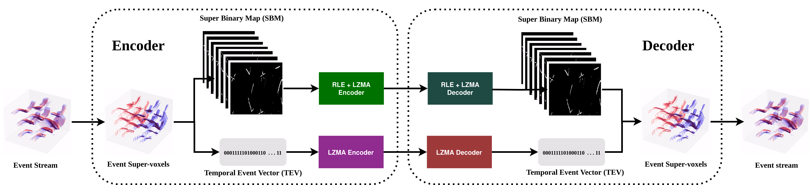

Featured
Selected work

Towards Efficient Neuromorphic Data Processing
A lossless spatio-temporal compression scheme for event data using a voxelized representation and context-adaptive entropy coding.

Blur to Brilliance
Event-guided deblurring and HDR novel view synthesis, combining NeRF and 3D Gaussian Splatting.